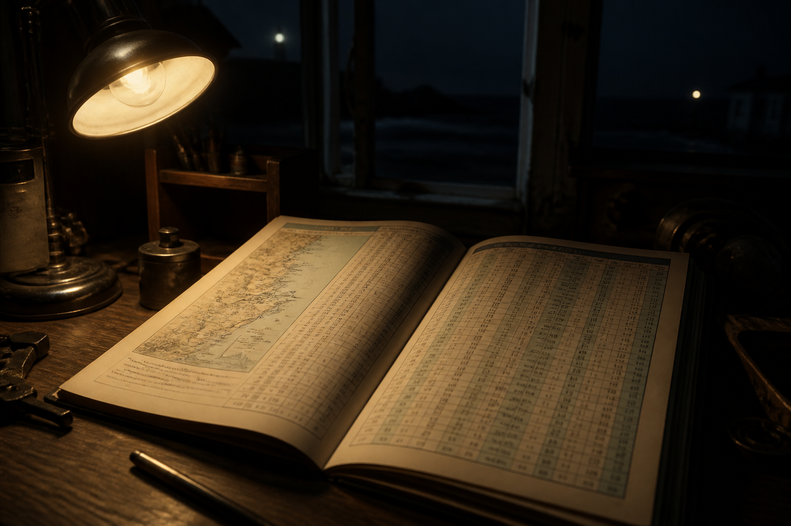
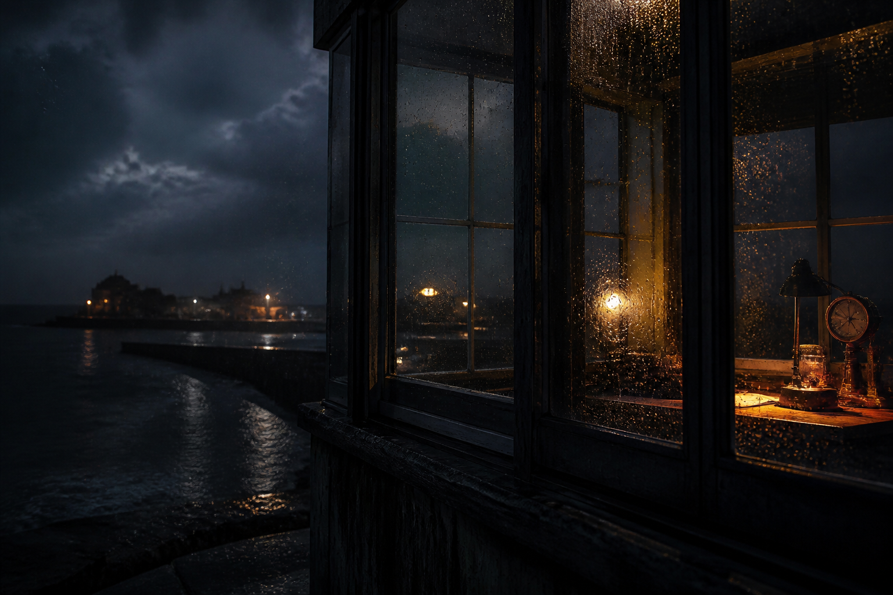
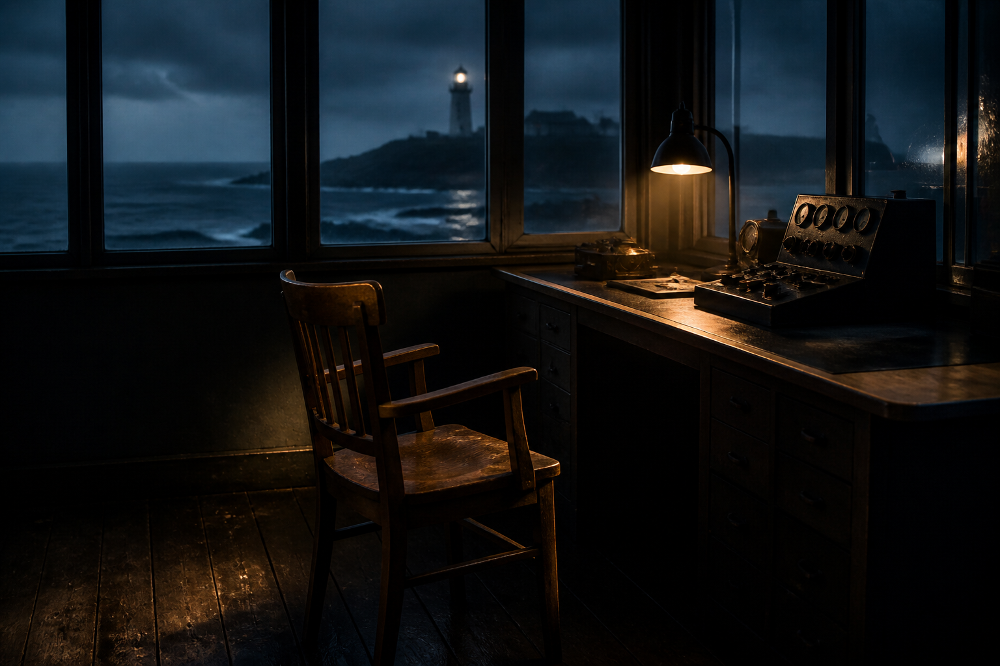

01
The tide table is open to yesterday. 潮汐表停在昨天。
Read the room first: four quiet frames, twelve sparse songs, then the long listening session embedded below.
Enter the sceneQuiet comic
A short vignette for this world only—images hold the breath; captions stay sparse.

The tide table is open to yesterday. 潮汐表停在昨天。

Rain beads on the glass; the harbor goes matte. 雨在玻璃上成珠，港面變啞。
The brass lamp clicks once, then decides against it. 銅燈響了一下，又決定不響。

Someone could return. The chair keeps the shape of waiting. 也許有人會回來。椅子仍記得等待的形狀。
Long listening
Start here when you want sound under the reading. Track buttons below seek into the session.
Prototype wiring: player uses a live QuietLY upload so embed/seek can be tested. Fiction and timestamps on this page are sample mapping, not a claim that this video is「退潮信號室」.
Full lyrics
Mandarin leads. English is a soft echo. Press a row to play from that cue.